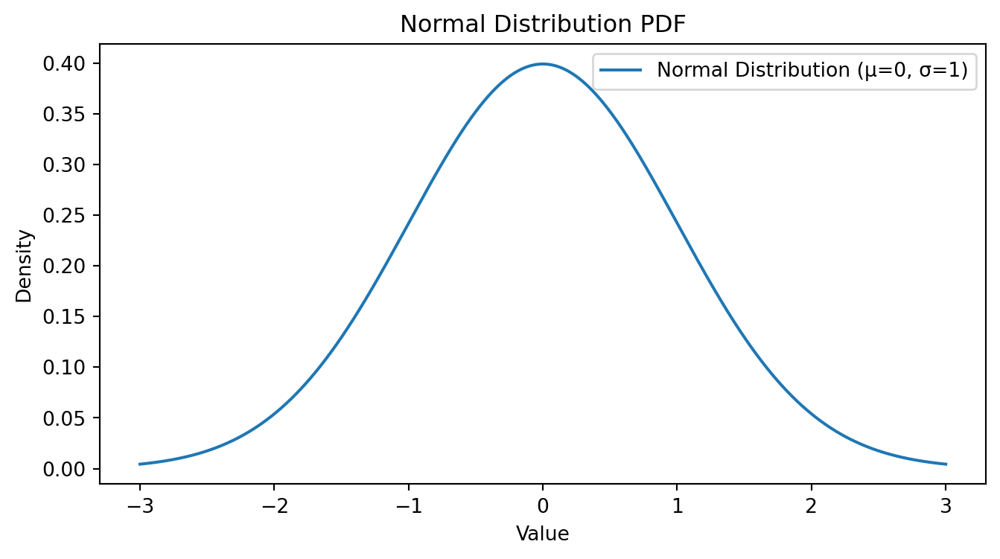

import matplotlib.pyplot as plt
from scipy.stats import bernoulli
# Probability of success
p = 0.5
# Possible outcomes
outcomes = [0, 1]
# PMF values
pmf_values = [bernoulli.pmf(x, p) for x in outcomes]
# Plotting
plt.bar(outcomes, pmf_values)
plt.xticks(outcomes, ['Failure', 'Success'])
plt.ylabel('Probability')
plt.title('Bernoulli Distribution PMF (p = 0.5)')
plt.show()Contents:
Introduction to Probability Theory and Random Variables.
Introduction to Random Variables.
Introduction to Probability .
Discrete Probability Distribution.
Continuous Probability Distribution.
Example of discrete probability distribution.
Example of contunious probability distribution.
Probability Theory and Random Variables
Probability theory is a branch of mathematics that deals with uncertainty and randomness. It provides a framework for understanding and quantifying uncertainty, making predictions in uncertain situations, and analyzing random phenomena. One of the fundamental concepts in probability theory is that of a random variable.
Random Variable
A random variable is a mathematical concept used to represent uncertain or random quantities in a probabilistic model. It assigns a numerical value to each possible outcome of a random experiment. Random variables can be classified into two main types:
Discrete Random Variables: Discrete random variables take on a countable set of distinct values. These values can often be enumerated. Common examples include the number of heads obtained when flipping a coin multiple times or the number of customers arriving at a store in a given hour.
Continuous Random Variables: Continuous random variables can take on any value within a certain range, often an interval of real numbers. These values are typically associated with measurements and can have an infinite number of possible outcomes. Examples include the height of individuals in a population or the time it takes for a computer to complete a task.
Random variables are denoted by letters, typically uppercase, such as X, Y, or Z. The possible values that a random variable can take on are called its “range” or “sample space.” For discrete random variables, the range is a set of distinct values, while for continuous random variables, the range is a continuous interval.
Probability:
Probability is a fundamental concept in mathematics, statistics, and everyday life. It quantifies the likelihood or chance of an event or outcome occurring in uncertain or random situations. In essence, probability helps us understand and measure uncertainty. Here are some key aspects of probability:
Event and Outcome: In probability, an “event” is a specific result or occurrence of interest, while an “outcome” is a particular result of a random experiment or process. Events can range from simple, like the outcome of a coin flip (heads or tails), to complex, like the probability of a stock market crash.
Sample Space: The sample space is the set of all possible outcomes of a random experiment. For example, when rolling a six-sided die, the sample space consists of the numbers 1 through 6.
Probability as a Number: Probabilities are expressed as numbers between 0 and 1, where 0 represents an impossible event, and 1 represents a certain event. A probability of 0.5 (or 50%) indicates a 50-50 chance of an event occurring.
Events and Probability: The probability of an event is typically denoted as P(E), where E is the event. The probability of an event can be calculated using various methods, depending on the type of probability distribution and the nature of the problem.
Now, let’s delve into the two specific probability distributions
Discrete Probability Distribution:
A discrete probability distribution deals with random variables that can take on a finite or countable number of distinct values. Each of these values has an associated probability of occurrence. Discrete probability distributions are used in situations where outcomes are countable and distinct.
Examples:
- Bernoulli Distribution: Models binary outcomes like success/failure, heads/tails. It has a single parameter, p, which represents the probability of success.
- Binomial Distribution: Models the number of successes (k) in a fixed number of independent Bernoulli trials (n) with the same probability of success (p).
- Poisson Distribution: Models the number of events that occur in a fixed interval of time or space.
Continuous Probability Distribution:
A continuous probability distribution deals with random variables that can take on an infinite number of values within a given interval. These distributions are used when outcomes can take any value within a range, often due to measurement precision or inherent continuity.
Examples:
- Normal Distribution (Gaussian): Characterized by a symmetric bell-shaped curve with parameters μ (mean) and σ (standard deviation). Widely used in various fields to model natural phenomena.
- Exponential Distribution: Models the time between events in a Poisson process, such as arrival times at a service center.
- Uniform Distribution: Assigns equal probability density to all values within a specified interval.
In both types of distributions, the probabilities are defined in different ways. Discrete distributions use probability mass functions (PMFs) to describe the likelihood of discrete outcomes, while continuous distributions use probability density functions (PDFs) to describe the likelihood of outcomes within a continuous range. Understanding these probability distributions and their associated mathematical functions is crucial in statistics, data analysis, and making informed decisions in situations involving uncertainty and randomness.
Example for Bernoulli Distribution
Example forBinomial Distribution
import matplotlib.pyplot as plt
from scipy.stats import binom
# Parameters
n = 10
p = 0.5
# Possible number of successes
k_values = range(n+1)
# PMF values
pmf_values = [binom.pmf(k, n, p) for k in k_values]
# Plotting
plt.bar(k_values, pmf_values)
plt.xlabel('Number of successes')
plt.ylabel('Probability')
plt.title('Binomial Distribution PMF (n=10, p=0.5)')
plt.show()Example for Poisson Distribution
import matplotlib.pyplot as plt
from scipy.stats import binom
# Parameters
n = 10
p = 0.5
# Possible number of successes
k_values = range(n+1)
# PMF values
pmf_values = [binom.pmf(k, n, p) for k in k_values]
# Plotting
plt.bar(k_values, pmf_values)
plt.xlabel('Number of successes')
plt.ylabel('Probability')
plt.title('Binomial Distribution PMF (n=10, p=0.5)')
plt.show()
Normal Distribution
import numpy as np
import matplotlib.pyplot as plt
from scipy.stats import norm
# Parameters for the Normal distribution
mu = 0 # mean
sigma = 1 # standard deviation
# Generate values within a range
x = np.linspace(mu - 3*sigma, mu + 3*sigma, 1000)
# Calculate the PDF
pdf = norm.pdf(x, mu, sigma)
# Plotting
plt.figure(figsize=(8, 4))
plt.plot(x, pdf, label=f'Normal Distribution (μ={mu}, σ={sigma})')
plt.title('Normal Distribution PDF')
plt.xlabel('Value')
plt.ylabel('Density')
plt.legend()
plt.show()
Exponential Distribution
import numpy as np
import matplotlib.pyplot as plt
from scipy.stats import expon
# Rate parameter for the exponential distribution
lambda_exp = 1
# Generate values for the x-axis
x_exp = np.linspace(0, 10, 1000)
# Calculate the PDF
pdf_exp = expon.pdf(x_exp, scale=1/lambda_exp)
# Plotting
plt.figure(figsize=(8, 4))
plt.plot(x_exp, pdf_exp, label=f'Exponential Distribution (λ={lambda_exp})')
plt.title('Exponential Distribution PDF')
plt.xlabel('Value')
plt.ylabel('Density')
plt.legend()
plt.show()Uniform Distribution
from scipy.stats import uniform
# Parameters for the uniform distribution
a, b = 0, 5
# Generate values within the range
x_uniform = np.linspace(a, b, 1000)
# Calculate the PDF
pdf_uniform = uniform.pdf(x_uniform, loc=a, scale=b-a)
# Plotting
plt.figure(figsize=(8, 4))
plt.plot(x_uniform, pdf_uniform, label=f'Uniform Distribution (a={a}, b={b})')
plt.title('Uniform Distribution PDF')
plt.xlabel('Value')
plt.ylabel('Density')
plt.legend()
plt.show()